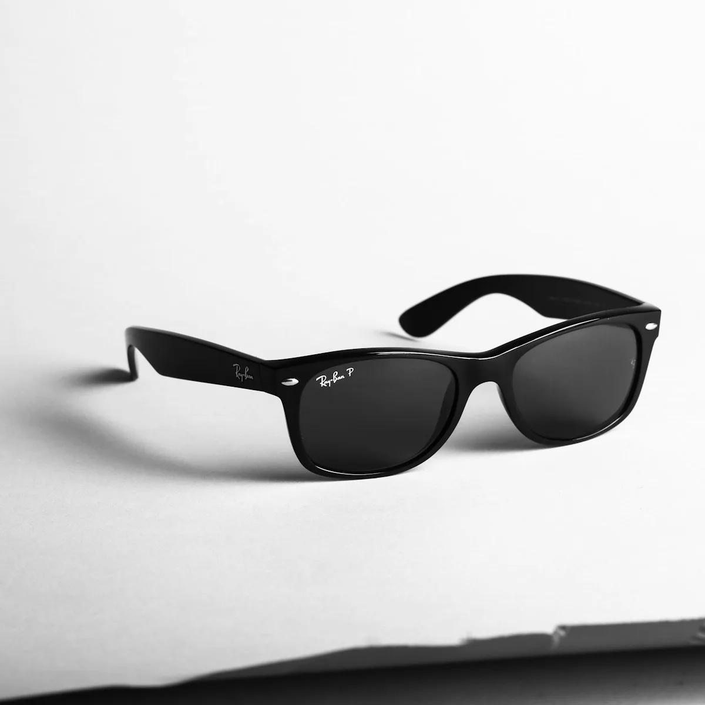

Courses & Programmes

Foundation Loom Weaving
Learn to dress a loom from scratch — warping, threading, tie-up and treadling. Students produce four sampler cloths demonstrating plain weave, twill, satin and simple pattern.
Natural Dye Studio
An intensive exploration of plant-based colour — mordanting, substantive dyes, extraction methods and resist techniques. Students build a personal dye book across ten sessions in the dyehouse.

Heritage Tapestry
The most demanding programme we offer: the full study of tapestry weaving in the Gobelin and Navajo traditions, from cartoon preparation through narrative image construction in wool and silk.

Master Weaver Residency
A six-month immersive residency for established textile artists seeking to deepen their practice under the daily mentorship of a senior Loom School master weaver in their chosen tradition.